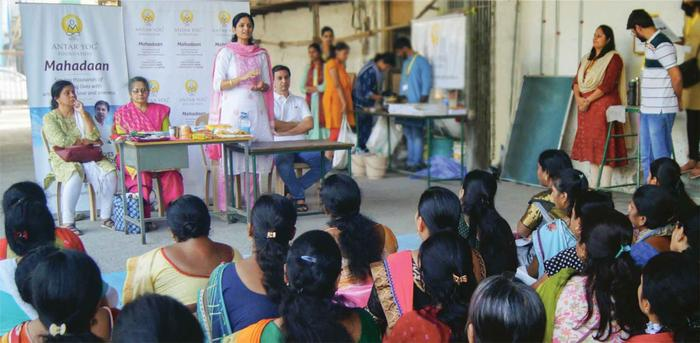
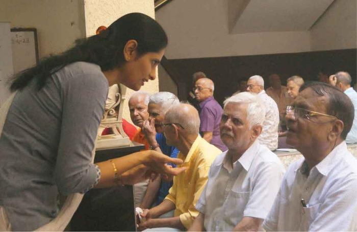
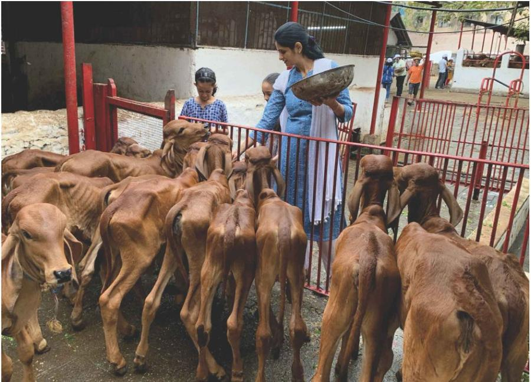
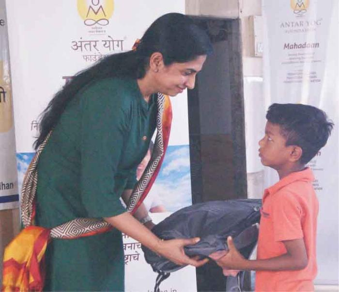

Seva In Action
Real impact from the Antar Yog Daan movement
— Brahmarishi Acharya Upendra Ji
Your daan is not a transaction. It is a sacred decision to convert your wealth into blessings, impact and a legacy that lives beyond you.
We work hard to earn, build, protect and grow. But the highest use of wealth is not only in what it gives us. It is in what it allows us to give back.
Through Antar Yog Daan, your contribution can become food for the hungry, education for children, care for the elderly, support for the ailing, protection for Dharma, preservation of Sanatan wisdom and a permanent foundation for Guru karya.
This is your opportunity to turn prosperity into punya, success into seva and wealth into a blessing for your family and future generations.
Choose your sankalp and contribution
🔒 Secure payment · 80G Tax deduction available
Real impact from the Antar Yog Daan movement
A Donation That Is Directed, Rooted And Accountable
Antar Yog Daan is not scattered across vague causes. It is guided by the spiritual principle of Supatra Daan, which means giving to the right recipient, for the right purpose and with the right bhav. Your daan through Antar Yog Foundation carries deeper meaning because it is:
Your contribution becomes part of a collective effort that can serve many lives together.
Giving is offered with seva bhav, humility and the sacred intention of upliftment.
Careful efforts are made to identify those who genuinely need support.
Daan offered with the right bhav creates punya, blessings, peace and prosperity.
Contributions are directed towards specific seva initiatives with accountability and care.
Most Donors Begin Here

Food is the most immediate act of compassion. When you offer Anna Daan, your contribution becomes a meal for devotees, seekers, volunteers and those in need.
Yes, I Want To Offer Anna Daan →
Turn birthdays, anniversaries, festivals, housewarmings, achievements and memorials into acts of seva. Share your blessings with those who need food, care, education and support.
Yes, I Want To Share My Celebration Through Seva →While we build our homes, careers and comforts, Sadhus and Sanyasis renounce everything to keep the spiritual fire of Sanatan Dharma alive. Your daan provides them with fresh food, healthcare and dignity.
Yes, I Want To Support The Living Pillars Of Dharma →While the world runs after wealth, Brahmans quietly preserve the Ved, mantra, rituals and Dharma that protect our families and society. Your daan supports their bhojan, education, healthcare and dignity.
Yes, I Want My Daan To Preserve Sanatan Knowledge →
Many children dream with empty stomachs, torn notebooks and no one to guide them. Your daan can give them food, education, healthcare, safety and the courage to dream again.
Yes, I Want To Make A Child's Future Better →Some children have lost more than comfort. They have lost the loving embrace of parents. Your daan can provide food, shelter, education, healthcare and the warmth of belonging.
Yes, I Want To Support An Orphan Child →Many specially abled individuals face daily challenges that most of us never have to think about. Your daan can provide mobility support, healthcare, education and opportunities for independence.
Yes, I Want To Support A Divyang Life →
In Sanatan Dharma, a married woman is revered as a living embodiment of Shakti, prosperity and auspiciousness. Your daan honours Suvasinis and invokes blessings for harmony and well-being.
Yes, I Wish To Honour Divine Shakti →
Support food, education, healthcare and essential care for families facing hardship. Your contribution becomes hope, dignity and opportunity for those who need it most.
Yes, I Want To Serve The Needy →
Support food, healthcare, warmth and care for senior citizens in need. Help elders live their later years with dignity, comfort and respect.
Yes, I Want To Support Elder Care →
Help provide medical care, medicines, holistic healing and wellness support to individuals facing illness, hardship and health challenges.
Yes, I Want To Support Healing →
Brahmarishi Acharya Upendra Ji's teachings have brought clarity, healing, strength and spiritual direction to countless seekers. Your daan helps carry this wisdom to more homes, hearts and future generations.
Support Guru Karya Today →
Serve Gau Mata through food, shelter, medical care and protection. Your seva preserves Dharma and brings blessings to families, communities and future generations.
Yes, I Want To Serve Gau Mata →
Help print and distribute life-transforming books based on Brahmarishi Acharya Upendra Ji's wisdom. Your daan carries Sanatan knowledge, sadhana and healing to sincere seekers.
Yes, I Want To Spread Spiritual Wisdom →Contribute towards land for a new Antar Yog Ashram where seekers can experience sadhana, healing, spiritual education and inner transformation for generations to come.
Yes, I Want To Build A Sacred Legacy →The Antar Yog Gurukul currently stands as a rented space of sadhana, seva, learning and Guru karya. Your daan can help make this sacred space permanent for generations of seekers.
Yes, I Want To Help Secure The Gurukul →Not all daan is monetary. Offer your abilities towards Guru karya and become part of a living spiritual mission through the seva of your hands, heart and commitment.
Yes, I Want To Offer Seva →Great Leaders Do Not Only Create Wealth. They Create Impact.
For those who are blessed with resources, influence and capacity, daan becomes one of the most powerful ways to transform success into meaning.
A true leader does not ask, "How much can I keep?"
A true leader asks, "How many lives can I uplift?"
Through Antar Yog Daan, you do not simply donate. You become part of a larger movement dedicated to spiritual upliftment, human welfare and national progress.
Your Daan Becomes Food, Education, Healing And Dharma Seva
Every contribution to Antar Yog Foundation supports work that touches lives at the physical, mental, social and spiritual levels. Through your generosity, Antar Yog can support:
Food distribution for the poor, diseased, elderly and differently-abled.
Groceries and daily essentials for families in need.
Medicines and healthcare support for the underprivileged.
Education support for children, orphans and deserving students.
Spiritual education and sadhana opportunities for seekers.
Support for Brahmans, Sadhus, Sanyasis and those preserving spiritual wisdom.
Sacred infrastructure for sadhana, healing, learning and seva.
Give With OM TAT SAT Bhav
As described in the Bhagavad Gita, daan offered with the right bhav becomes spiritually powerful.
Seeing the Divine in the recipient.
Offering selflessly, without ego or attachment.
Giving for the true welfare and upliftment of others.
When daan is offered with this bhav, it purifies wealth, uplifts the receiver and returns as blessings to the giver. This is not merely philosophy. It is the spiritual mechanism behind every great act of giving in our history.
Yes, I Want To Make My Contribution SacredThe Highest Daan Is Given Where It Creates The Highest Impact
In Sanatan Dharma, daan is sacred. But the highest form of daan is Supatra Daan, which means giving to a deserving person, cause or mission.
Wealth that is only accumulated remains limited. Wealth offered for Dharma, seva and upliftment becomes immortal.
Karna, Bali and Vikramaditya are remembered not only for what they possessed, but for what they gave. Their names outlasted their kingdoms.
Choose The Form Of Daan That Matches Your Sankalp
Every donor has a different bhav, capacity and purpose. Antar Yog Daan allows you to contribute in the way that aligns with your intention.
Make a powerful one-time contribution towards the mission of Antar Yog Foundation.
Become a steady supporter. Monthly daan helps sustain meals, welfare, sadhana, healing and outreach consistently.
Offer a larger annual contribution towards spiritual education, seva and foundation activities.
Partner with Antar Yog Foundation for spiritual education, holistic health and Dharma-based nation-building.
Contribute in memory of ancestors, on birthdays, anniversaries, special occasions or as a sankalp for your family's well-being.
Yes, I Want To Choose My Daan SankalpEvery Level Of Giving Creates A Different Scale Of Impact
A beginning — an act of intention that joins a larger stream of seva.
Food, essentials and care for those who have little.
Dedicated support for one focused seva initiative.
Meaningful support towards Dharma and seva karya.
Welfare, education or healing support at a scale that changes lives.
Patron-level support for high-impact spiritual and social initiatives.
A legacy contribution that creates impact long after the moment of giving.
Let Your Daan Carry A Name, A Sankalp Or A Family's Blessings
For selected contribution levels and projects, donors may dedicate their daan in a meaningful way. Your daan can be offered:
Your Daan Is Handled As A Sacred Responsibility
At Antar Yog Foundation, every contribution is treated with the same seriousness and care as the seva it is meant to support.
Antar Yog Foundation is a registered entity. [Insert registration details here]
Donations qualify for tax deduction under Section 80G of the Income Tax Act. [Insert PAN and 80G details here]
Contributions are accepted only through official bank accounts and verified digital payment options. [Insert bank and UPI details here]
A formal receipt is issued for every eligible contribution.
Donors who contribute above a certain level may receive periodic updates on how their daan is being used.
Where your contribution is dedicated to a specific initiative, updates may be provided on that initiative's progress.
This Is What Your Daan Is Supporting Right Now

We are serving 200 meals this month at our seva centre. Help us reach 300 meals for devotees, seekers and those in need.
Real experiences from our community of givers
[Specific, honest statement about their experience. What did they see? What did they feel? What changed?]
— Name, Profession / City
[What made you decide to give? What convinced you this was the right place?]
— Name, Profession / City
[What joy did you experience after giving? How did it impact your family and outlook?]
— Name, Profession / City
The opportunity to give is also the opportunity to rise.
When you offer daan for a higher purpose, you do not lose wealth. You purify it. You multiply its value. You convert it into punya, blessings, impact and legacy.
Join the Antar Yog Daan Movement and become a contributor to a mission that is transforming minds, transforming lives and transforming Bharat.